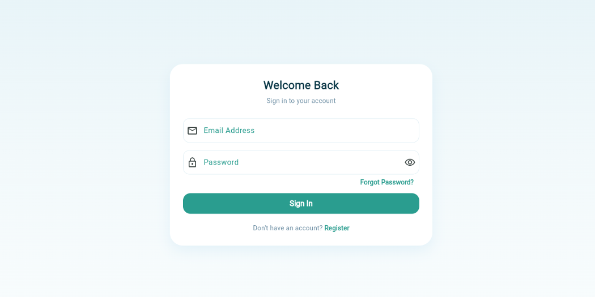
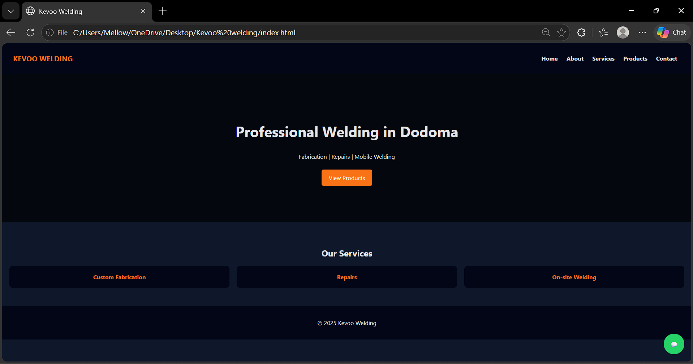

Information Systems
Understanding and application of information systems to support organizational processes, decision-making and digital transformation.
INFORMATION SYSTEMS PROFESSIONAL
BSc Information Systems graduate with a broad background in Information Systems, Business Intelligence, Data Analysis, Geographic Information Systems, business and IT.
Information Systems Professional
ABOUT ME
I am a Bachelor of Science in Information Systems graduate from the University of Dodoma, with an interdisciplinary background in technology, business, data, geographic information and organizational systems.
My academic background covers Information Systems strategy, systems analysis and design, e-governance, decision support systems, Business Intelligence, data visualization, enterprise systems and ICT project management.
I also have exposure to Geographic Information Systems (GIS) and QGIS, data analysis, databases, web development, programming, computer networking, Linux systems, hardware troubleshooting and IT support.
Through academic and practical projects, I have worked on digital solutions including a financial management and loan-support system for bodaboda riders, UDOM Business Hub, Msolwa Service Company and Kevoo Welding Services Website.
I am interested in using information, technology and data to improve processes, support decision-making and develop practical digital solutions across different sectors.
SKILLS
A multidisciplinary skill set developed through academic study, practical training and hands-on project development across information systems, technology, data and business.
Understanding and application of information systems to support organizational processes, decision-making and digital transformation.
Working with data and analytical concepts to support reporting, visualization and informed business decision-making.
Practical experience with computer maintenance, hardware, networking and technical support gained through industrial training and hands-on work.
Developing responsive websites and web-based interfaces for personal, academic and small-business projects.
Foundational programming and database development experience gained through academic coursework and practical projects.
Academic exposure to geographic information systems and spatial data for applications across different sectors.
Understanding of business, management and organizational concepts relevant to the implementation and management of technology.
Practical exposure to multimedia production and digital content creation through industrial practical training.
EXPERIENCE
Practical exposure gained through industrial training and hands-on information technology support.
Ministry of Lands — Dar es Salaam
Gained practical experience in IT support, computer maintenance, networking, hardware troubleshooting, user support and information management within an organizational environment.
University of Dodoma (UDOM)
Practical training conducted at the University of Dodoma, combining information systems customization with multimedia and video editing activities.
SELECTED PROJECTS
A selection of academic, personal and practical projects I have worked on across Information Systems, business, finance, web development and digital services.

Near CompletionFINANCIAL MANAGEMENT · AI · INFORMATION SYSTEMS
A financial management and loan-support system designed to help bodaboda riders manage their finances, record expenses, monitor financial information and access loan-related services.
WEB DEVELOPMENT · BUSINESS WEBSITE
A professional business website developed for Kevoo Welding Services to showcase welding and metal fabrication services, products and previous work while making it easier for customers to discover the business and get in touch.

CompletedEDUCATION
My academic journey in information systems, technology, business and related disciplines.
University of Dodoma (UDOM)
Completed a Bachelor of Science in Information Systems with an interdisciplinary foundation in information technology, business, data, management and organizational systems.
Iyunga Technical Secondary School — Mbeya
Advanced secondary education with a technical and academic foundation that supported my progression into information systems and technology studies.
Uru Secondary School — Moshi
Theresa Mbezi Luis
CONTACT
I am open to professional opportunities, technology projects, collaborations and opportunities to apply my Information Systems skills in practical environments.
Dar es Salaam, Tanzania